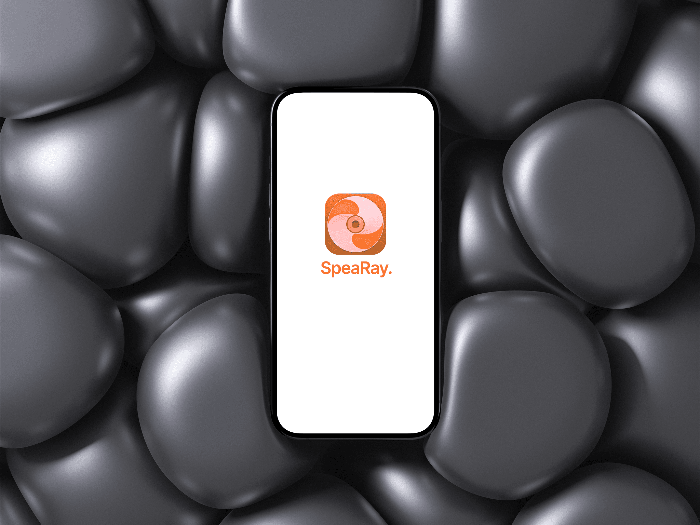
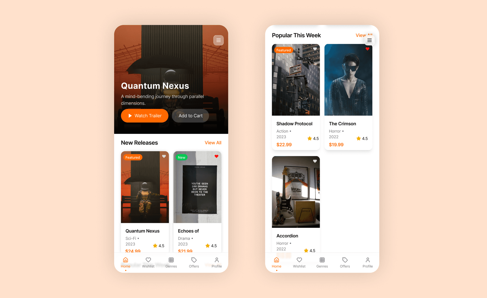
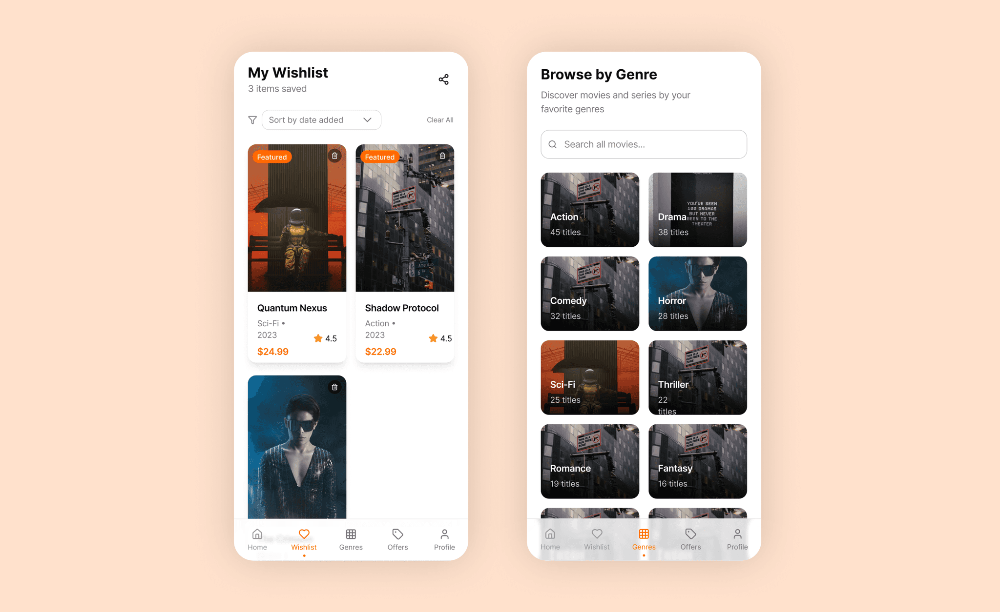
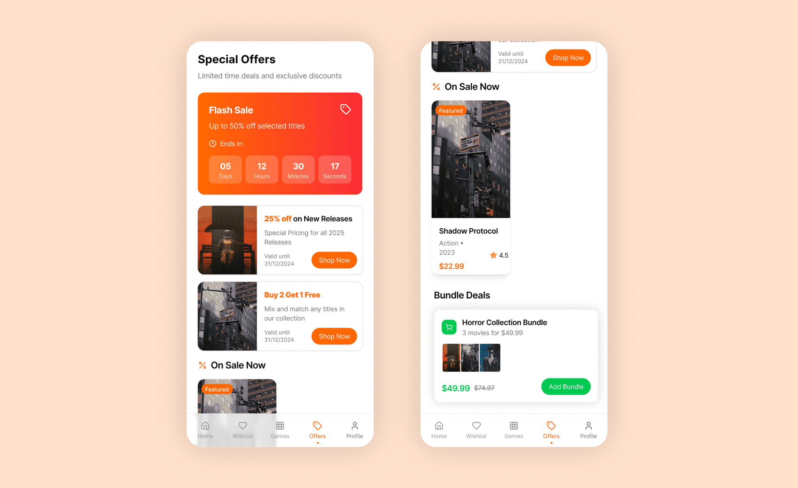
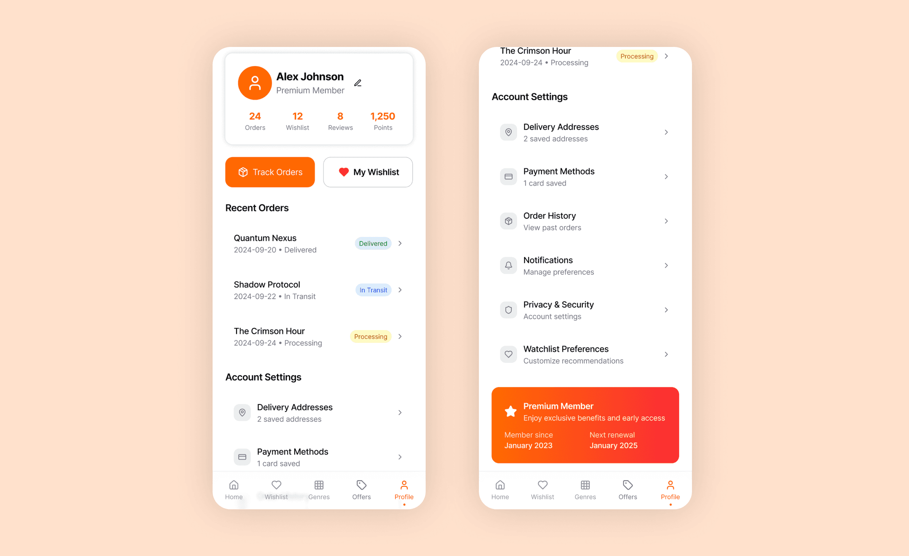

SpeaRay is a mobile app concept designed to reinvigorate the experience of renting and collecting high-quality Blu-ray discs of movies and series, delivered directly to your home. In a digital age dominated by streaming, SpeaRay seeks to offer movie lovers, collectors, and cinephiles both the nostalgia and unmatched quality of physical media—while providing the convenience and personalization expected from modern mobile platforms.




Personas
1. Jason, 32 – The Film Aficionado
Collects movies in their highest quality, prefers owning physical discs, and enjoys director commentaries or exclusive box sets. Looks for rare releases and wants a wish list to keep track of hard-to-find titles.
2. Maria, 24 – The Casual Binge Watcher
Enjoys a mix of classics and new releases. Likes curated genre lists, easy offers, and occasional deals for boxed sets on her favorite shows.
3. Sanjay, 41 – The Nostalgic Parent
Wants to introduce children to the movies of his youth but is disappointed by streaming services’ rotating catalogs. Values straightforward home delivery and family bundles.
Problem Statement
- Streaming has made access to content easy, but picture/sound quality and collectability have declined.
- Movie collectors struggle to find, track, and purchase authentic Blu-rays for their shelves.
- Physical media delivery websites are often outdated, slow, and lack user-friendly mobile experiences.
- There are few apps offering wishlist management, personalized genre browsing, and exclusive physical media deals in one seamless flow.
Competitive Analysis
Blu-ray.com My Movies App
- Offers barcode scanning and collection tracking but limited e-commerce and delivery features; UI is dated and less focused on personalization.
Amazon & Major Retail Apps
- Massive inventory and fast delivery, but poor discoverability for cinephiles, limited curation, and weak experience for collectors.
Streaming Platforms (Netflix, Disney+, Amazon Prime)
- No physical ownership; rely on subscriptions, ever-changing catalogs, and no way to own or gift a tangible collectible.
Key Differentiators for SpeaRay:
- Combines the quality and permanence of physical media with the intuitiveness of modern mobile shopping.
- Focuses on collectors: wishlists, detailed product info, collector’s editions, and high-res imagery.
- Curated browsing—genre and offer-driven discovery—allowing exploration, not just searching.
Solution Highlights
- Homepage:
Hero carousel for featured discs and latest arrivals; sections for new, popular, and recommended content. - Wishlist Page:
Grid of saved and tracked titles, with instant availability notification and direct “add to cart” action. - Genre Page:
Browse and filter by genres; each with its own landing visual and curated lists. - Offers Page:
Time-limited deals, bundles, and exclusives; deals surfaced with bold visuals and easy redemption. - Profile Page:
Account management, address book, order history, and purchase preferences.
Navigation:
Primary pages accessible via a bottom tab bar.
A hamburger menu at the top right provides quick access to secondary controls (Settings, Preferences, Shipping Locations, Language, and Support).
Design Rationale
- Visuals:
Dark theme with bold orange accents, maximizing contrast and focus on vibrant movie artwork. - Usability:
Large covers, easy swiping, one-tap wishlist and orders; hamburger menu only for less-used, non-core options. - Personalization:
Persistent wishlists, dynamic offers, user profiles, and push notifications for rare finds or restocks. - Accessibility:
Full voiceover support, large tap targets, and visual cues on every interactive element.
Outcome
SpeaRay provides a modern, cinematic, and delightful way for physical media lovers to discover, wishlist, and own Blu-ray movies and series. It bridges the tactile joys of collection with today’s expectations for convenience, curation, and mobile-first access—restoring ownership, quality, and nostalgia for film fans everywhere.